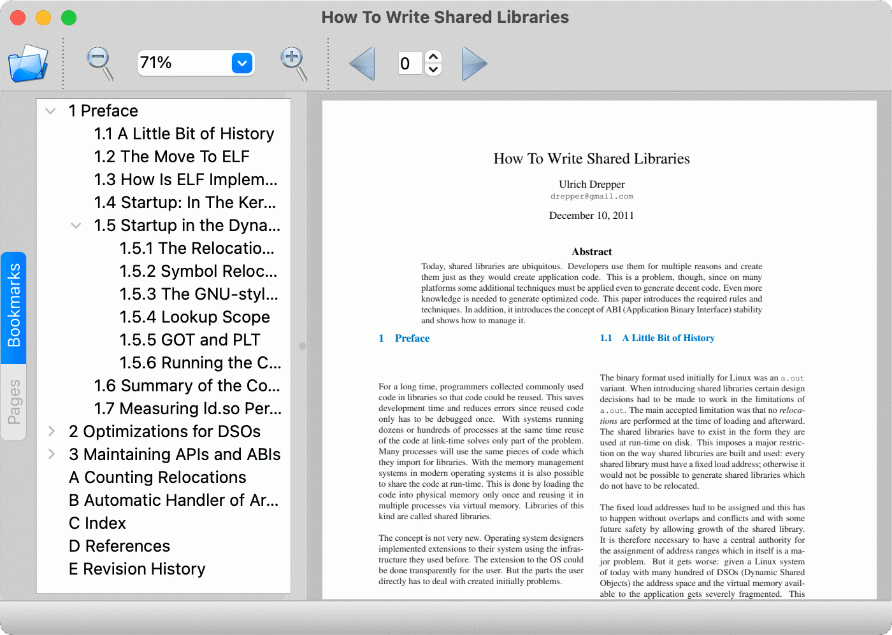

PDF Viewer Widget Example
A widget-based PDF viewer that allows scrolling through the pages.

PDF Viewer demonstrates how to use the QPdfView class to render PDF documents and the QPdfPageNavigator class to navigate them.
Qt Creator and the integrated Qt Designer were used to create the example UI and to connect it to the code. This affects the code, which might be somewhat different to what you would typically write by hand. For more information about using Qt Designer, see Qt Designer Manual and Qt Creator: Creating a Qt Widget Based Application.
Running the Example
To run the example from Qt Creator, open the Welcome mode and select the example from Examples. For more information, visit Building and Running an Example.
Creating the Main Window
The MainWindow class inherits the QMainWindow class:
class MainWindow : public QMainWindow { Q_OBJECT public: explicit MainWindow(QWidget *parent = nullptr); ~MainWindow();
The class declares public and private slots that match the actions of the selectors:
public slots: void open(const QUrl &docLocation); private slots: void bookmarkSelected(const QModelIndex &index); void pageSelected(int page); void searchResultSelected(const QModelIndex ¤t, const QModelIndex &previous); // action handlers void on_actionOpen_triggered(); void on_actionQuit_triggered(); void on_actionAbout_triggered(); void on_actionAbout_Qt_triggered(); void on_actionZoom_In_triggered(); void on_actionZoom_Out_triggered(); void on_actionPrevious_Page_triggered(); void on_actionNext_Page_triggered(); void on_thumbnailsView_activated(const QModelIndex &index); void on_actionContinuous_triggered(); void on_actionBack_triggered(); void on_actionForward_triggered();
The actual layout of the main window is specified in a .ui file. The widgets and actions are available at runtime in the ui member variable.
void on_actionFindNext_triggered();
void on_actionFindPrevious_triggered();
private:
Ui::MainWindow *ui;
The m_zoomSelector variable holds the zoom selector and the m_pageSelector holds the page selector. The m_document variable is an instance of the QPdfDocument class that contains the PDF document.
ZoomSelector *m_zoomSelector;
QPdfPageSelector *m_pageSelector;
QPdfSearchModel *m_searchModel;
QLineEdit *m_searchField;
QFileDialog *m_fileDialog = nullptr;
QPdfDocument *m_document;
};
The actual setup of the different objects is done in the MainWindow constructor:
MainWindow::MainWindow(QWidget *parent) : QMainWindow(parent) , ui(new Ui::MainWindow) , m_zoomSelector(new ZoomSelector(this)) , m_pageSelector(new QPdfPageSelector(this)) , m_searchModel(new QPdfSearchModel(this)) , m_searchField(new QLineEdit(this)) , m_document(new QPdfDocument(this)) {
The constructor first calls setupUi() to construct most of the main window according to the UI file. The zoom and page selectors need to be added to the toolbar via QToolBar::insertWidget(), because that cannot be done in a UI file:
ui->setupUi(this);
m_zoomSelector->setMaximumWidth(150);
ui->mainToolBar->insertWidget(ui->actionZoom_In, m_zoomSelector);
ui->mainToolBar->insertWidget(ui->actionForward, m_pageSelector);
We connect relevant signals to the page selector spinbox and the browser-style back and forward buttons:
connect(m_pageSelector, &QPdfPageSelector::currentPageChanged, this, &MainWindow::pageSelected);
m_pageSelector->setDocument(m_document);
auto nav = ui->pdfView->pageNavigator();
connect(nav, &QPdfPageNavigator::currentPageChanged, m_pageSelector, &QPdfPageSelector::setCurrentPage);
connect(nav, &QPdfPageNavigator::backAvailableChanged, ui->actionBack, &QAction::setEnabled);
connect(nav, &QPdfPageNavigator::forwardAvailableChanged, ui->actionForward, &QAction::setEnabled);
We connect the zoomModeChanged and zoomFactor changed signals of the PDF view to the functions that reset the zoom selector:
connect(m_zoomSelector, &ZoomSelector::zoomModeChanged, ui->pdfView, &QPdfView::setZoomMode);
connect(m_zoomSelector, &ZoomSelector::zoomFactorChanged, ui->pdfView, &QPdfView::setZoomFactor);
m_zoomSelector->reset();
We then load the PDF document to the viewer:
...
ui->pdfView->setSearchModel(m_searchModel);
Finally, we connect the zoomFactorChanged signal to the function that sets the value of the zoom selector:
ui->searchToolBar->insertWidget(ui->actionFindPrevious, m_searchField);
connect(new QShortcut(QKeySequence::Find, this), &QShortcut::activated, this, [this]() {
m_searchField->setFocus(Qt::ShortcutFocusReason);
});